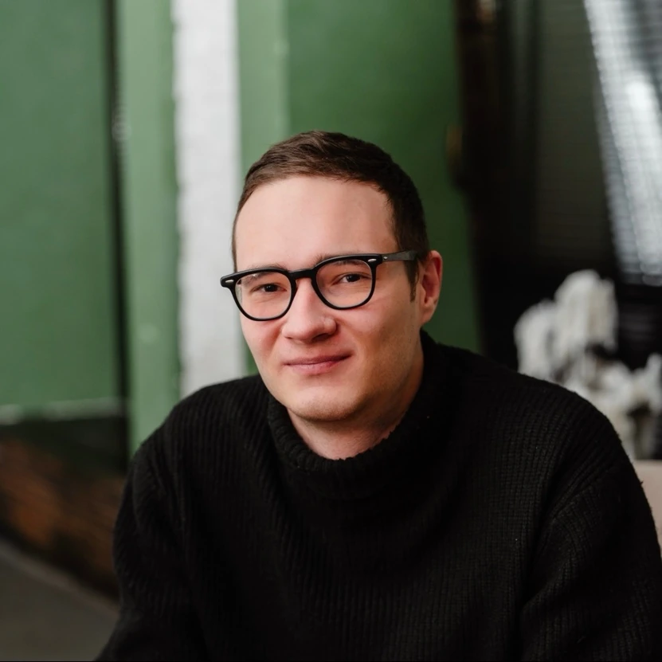
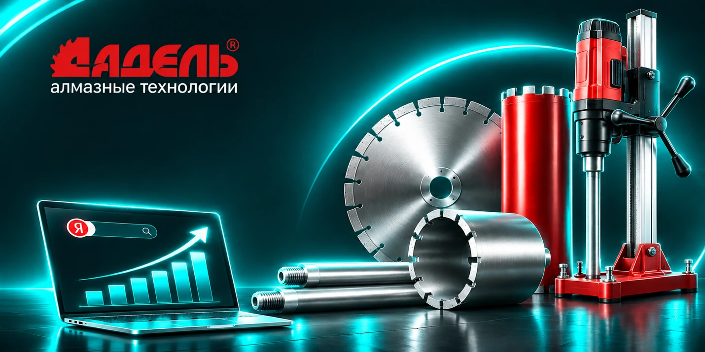
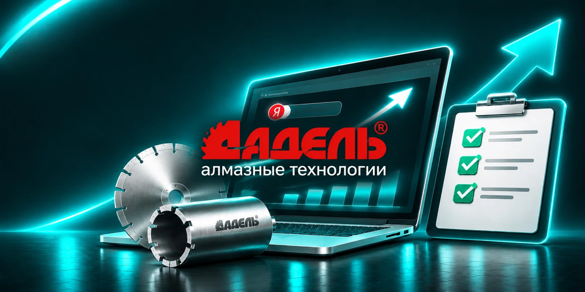
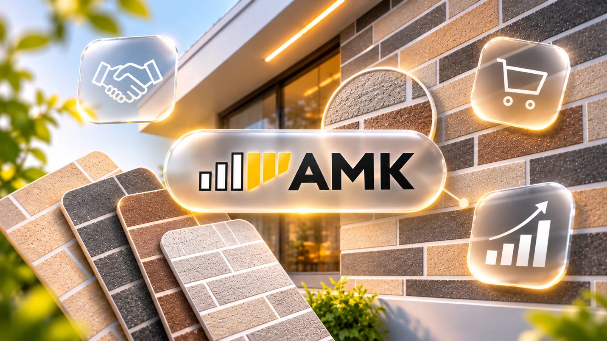
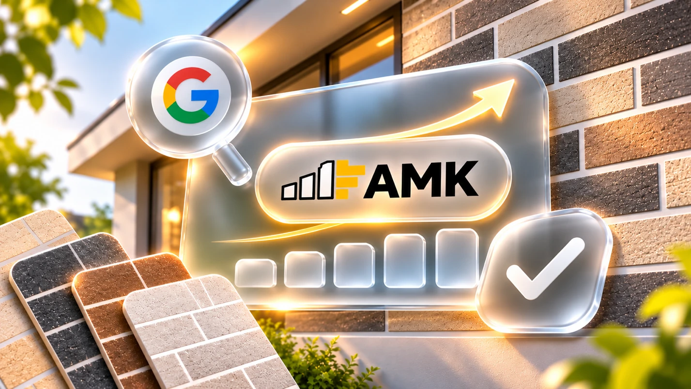
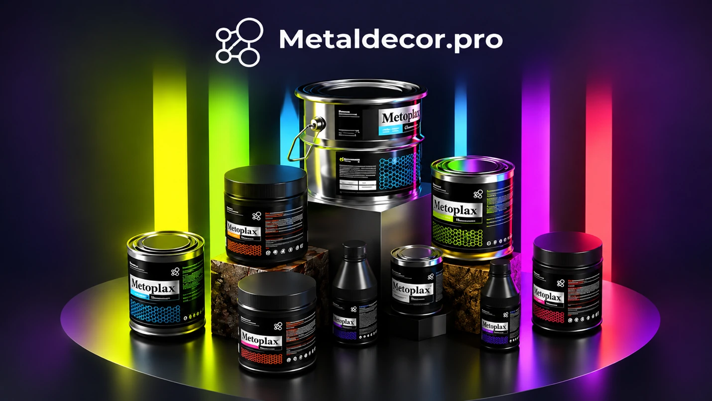
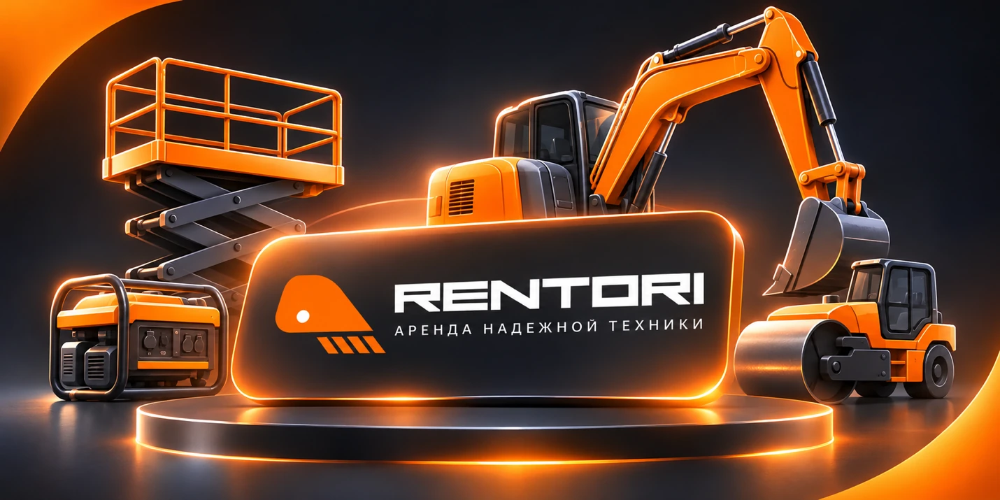
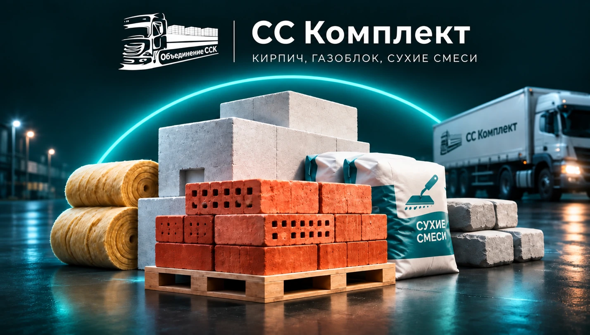
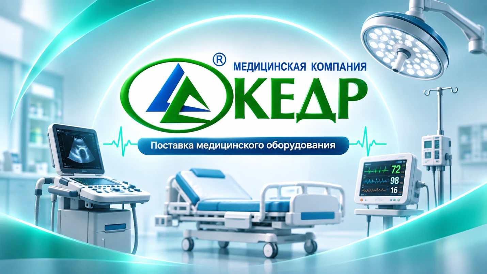

SEO · Selected Work
Beyond words.
Real results.
A collection of real SEO projects across Google and Yandex. Filter by search engine and explore each detailed case study.
Explore projects ↗13 case studies · 10 clients

Projects & Results.
Showing 13 of 13
ADEL Group · Yandex + Google
Diamond cutting tools
↗

ADEL Group · Yandex
Diamond cutting tools · dedicated case study
↗
pifshtany.ru
Online math school
↗

AMK Profi · Yandex
Building and finishing materials
↗

AMK Profi · Google
Building and finishing materials
↗
Endoskope · Yandex
Medical services
↗
Endoskope · Google
Medical services
↗
promoremuvka.ru
Custom keychains and fabric tags
↗

metaldecor.pro
Liquid metal coatings and metallization
↗

rentori.ru
Construction equipment rental
↗

cckomplekt.ru
Building materials
↗

mkkedr.ru
Medical equipment
↗
cyberclass.ru
Programming education
↗